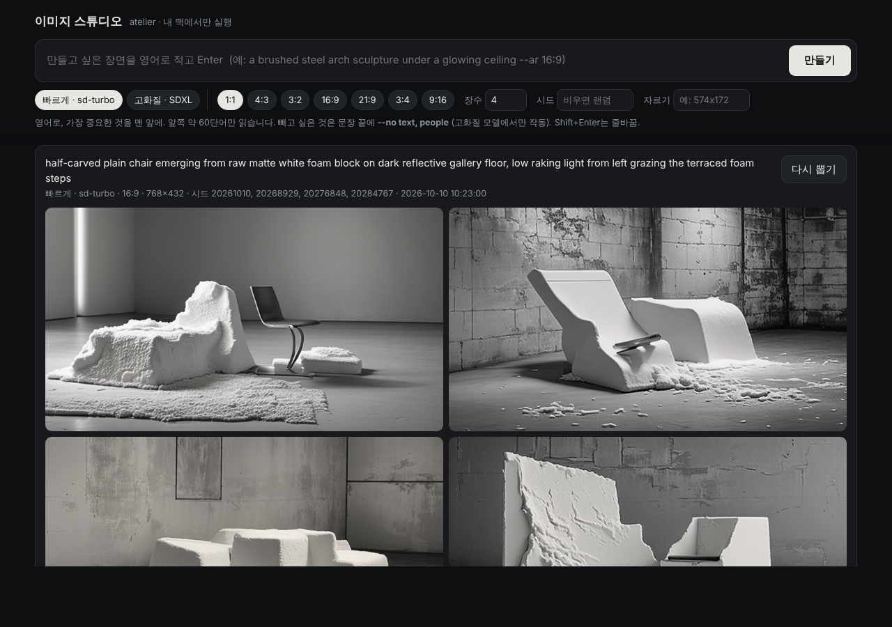

코딩을 몰라도 됩니다. 설치는 한 줄 복사·붙여넣기, 그다음부터는 바탕화면 아이콘을 더블클릭해 문장만 입력하면 이미지가 나옵니다.
영어 문장을 입력하면 내 맥 안에서 이미지를 만들어 주는 프로그램입니다. 인터넷 서비스에 그림을 올리지 않고, 사용료도 없습니다. 미드저니처럼 한 번에 4장이 나오고, 마음에 드는 그림의 구도를 유지한 채 문장만 바꿔 다시 만들 수 있습니다.
만든 모든 그림에는 사용한 문장, 출발점 번호(시드), 걸린 시간, 품질 검사 결과가 함께 기록됩니다.
| 항목 | 내용 |
|---|---|
| 맥 | Apple 실리콘 맥 (M1 · M2 · M3 · M4). macOS 11 이상. 인텔 맥은 확인하지 않았고, 되더라도 매우 느립니다 |
| 저장 공간 | 10GB 이상 여유 (프로그램 1–2GB + 그림 모델 약 2.6GB + 결과물) |
| 인터넷 | 처음 설치할 때만 필요합니다. 설치 후에는 인터넷 없이도 그림을 만들 수 있습니다. |
| 맥 로그인 비밀번호 | Python을 설치할 때 한 번 입력합니다. |
| 시간 | 설치 10–30분 (인터넷 속도에 따라). 그림은 장당 몇 초. |
| 단계 | 하는 일 |
|---|---|
| [1/5] | Python 확인. 없으면 python.org에서 받아 설치합니다 → 비밀번호 입력 (아래 4번) |
| [2/5] | 프로그램 받기 → 홈 폴더의 diffusion_model |
| [3/5] | 필요한 부품 설치 (가장 오래 걸립니다) |
| [4/5] | 그림 모델 받기 (약 2.6GB) |
| [5/5] | 바탕화면에 아이콘 두 개 만들기 |
Password:가 나오면
맥에 로그인할 때 쓰는 비밀번호를 입력하고 Enter. 입력하는 동안 화면에 아무것도 보이지 않는 것이 정상입니다.diffusion_model_install.log 파일을 보내 주세요.바탕화면의 이미지 스튜디오를 더블클릭하면 터미널 창이 하나 뜨고, 잠시 뒤 브라우저에 아래 화면이 열립니다. (터미널 창은 프로그램이 돌아가는 곳이니 쓰는 동안 닫지 마세요.)

| 옵션 | 뜻 | 예 |
|---|---|---|
--ar | 가로:세로 비율 (최대 3:1) | --ar 16:9 |
--n | 몇 장 (1–4) | --n 2 |
--seed | 출발점 번호. 같은 문장 + 같은 시드 = 같은 그림 | --seed 1234 |
--crop | 지면 칸 크기로 가운데를 잘라 따로 저장 | --crop 574x172 |
--no | 빼고 싶은 것 (고화질 모델에서만 작동) | --no text, people |
기본 모델(빠르게 · sd-turbo)은 장당 몇 초로 빠르지만 작은 그림(768×432)에 세부가 부족합니다. 고화질 · SDXL은 더 크고 세밀하게 그리고(16:9는 1192×672, 16GB 맥에 맞춘 크기), --no로 빼고 싶은 것을 지정할 수 있습니다.
| 빠르게 · sd-turbo | 고화질 · SDXL | |
|---|---|---|
| 크기 (16:9) | 768×432 | 1192×672 |
| 속도 | 장당 약 3초 (실측) | 장당 1–3분 (예상, 맥북 에어 기준. 아직 측정 전) |
| 처음 불러오기 | 15–20초 (실측) | 1–2분 (예상) |
--no | 무시됨 | 작동 |
| 모델 크기 | 약 2.6GB (기본 설치) | 약 7GB (따로 받기) |
| 권장 메모리 | 8GB 이상 | 16GB 이상 |
터미널에 아래 한 줄을 붙여 넣고 Enter. 설치 때와 같은 명령에 끝부분만 다릅니다.
--no text, people, logo처럼 씁니다.이 그림 모델은 작고 빠른 대신 앞쪽 약 50–60단어까지만 읽습니다. 다음 다섯 가지만 지키면 결과가 크게 좋아집니다.
no people이라고 쓰면 오히려 사람이 나올 수 있습니다. 원하지 않는 것은 아예 언급하지 마세요.--ar 16:9로 만들고 --crop 574x172로 가운데를 잘라 쓰세요. 중요한 것이 화면 가운데 가로 띠에 오도록 문장을 쓰면 좋습니다.Finder → 홈 폴더 → diffusion_model → runs. 작업마다 run_studio-날짜-시간 폴더가 생기고, 그 안의 images에 그림, job.json에 문장과 시드가 저장됩니다. 스튜디오의 저장 버튼으로 바로 받아도 됩니다.
설치할 때와 같은 한 줄을 다시 실행하면 최신 버전으로 바뀝니다. 만든 그림(runs)은 그대로 남습니다.
imagine미드저니의 /imagine처럼 터미널에서도 만들 수 있습니다. 설치 후 새 터미널 창에서:
imagine 입력 후 Enter"프롬프트를 붙여 넣고 Enter"라는 안내가 나옵니다.--hq를 붙이면 고화질(SDXL). 결과는 미리보기로 열리고 스튜디오 기록에도 남습니다.zsh: command not found: (첫 단어) 오류가 납니다. 반드시 imagine을 먼저 입력하세요.바탕화면의 이미지 만들기는 같은 기능을 질문-대답 방식으로 쓰는 메뉴입니다. 미리 설계해 둔 작품(스틸 조각 · 흰 폼 의자 · Memory of Space)도 여기서 번호만 골라 만들 수 있습니다.
| 지울 것 | 위치 |
|---|---|
| 프로그램과 만든 그림 | 홈 폴더의 diffusion_model 폴더 |
| 그림 모델 (약 2.6GB) | 홈 폴더의 숨김 폴더 .cache/huggingface (Finder에서 ⌘+Shift+.로 표시) |
| 바탕화면 아이콘 | 이미지 스튜디오 · 이미지 만들기 |
| Python (다른 곳에 안 쓴다면) | 응용 프로그램 폴더의 Python 3.12 |
| 증상 | 해결 |
|---|---|
zsh: command not found: (문장의 첫 단어) | 프롬프트를 터미널에 바로 붙여 넣은 경우입니다. 스튜디오 화면 맨 위 칸에 넣거나, 터미널에서 imagine을 먼저 입력한 뒤 붙여 넣으세요. |
zsh: parse error | 설명 글까지 같이 붙여 넣은 경우입니다. 명령 한 줄만 붙여 넣으세요. |
| 설치 명령이 두 줄로 들어감 | 지우고, 한 줄로 다시 붙여 넣으세요. |
| "확인되지 않은 개발자" 경고 | 아이콘을 우클릭 → 열기 → 열기. (시스템 설정 → 개인정보 보호 및 보안 → "그래도 열기"가 나올 수도 있습니다) |
| 브라우저가 안 열림 | 브라우저 주소창에 http://127.0.0.1:7860 입력 |
| 그림이 까맣게 나옴 | 터미널에서 한 줄 실행:cd ~/diffusion_model && ATELIER_DTYPE=float32 .venv/bin/python studio.py |
engine unavailable ... not in the local Hugging Face cache | 그림 모델이 아직 없습니다. 설치 한 줄을 다시 실행하세요. |
Address already in use | 스튜디오가 이미 켜져 있습니다. 열려 있는 터미널 창을 모두 닫고 다시 더블클릭하세요. |
| "고화질 · SDXL (설치 필요)" | 4+장의 "고화질 모델 받기" 한 줄을 실행하세요. |
| "그림 엔진이 비정상 종료" 메시지 (또는 "Python이 예기치 않게 종료됨" 창) | 그림을 그리는 프로세스만 종료된 것이고, 스튜디오는 계속 쓸 수 있습니다. 종료 코드 -9는 대개 메모리 부족입니다. 다른 앱(특히 브라우저 탭)을 닫고 --n 1, 비율 1:1로 다시 해 보세요. 반복되면 터미널 창의 메시지를 보내 주세요. |
| 고화질이 오래 걸림 | 정상일 수 있습니다 (장당 1–3분). 화면의 단계 숫자가 늘고 있으면 진행 중입니다. "모델 불러오는 중"이 5분 넘게 그대로면 멈추기를 누르고, 활성 상태 보기 → 메모리 탭에서 메모리 압력이 빨간색인지 확인해 주세요. |
| 그 밖의 오류 | 터미널의 빨간 메시지와 diffusion_model_install.log를 보내 주세요. |
빠른 모델(sd-turbo)은 속도를 위해 작게 만든 모델이라 768×432 정도에 세부가 부족합니다. 고화질 모드(SDXL)는 1192×672(16:9)로 그립니다. 인쇄용(300dpi)으로 크게 쓰려면 이것도 부족할 수 있어, 업스케일이 따로 필요합니다.
두 모델 모두 유해 이미지 필터가 없습니다. 개인 작업용으로는 괜찮지만, 걸러지지 않은 결과를 공개 서비스에 그대로 올리지 마세요. 상업적으로 쓰기 전에는 각 모델(Stability AI) 라이선스 조건을 확인하세요. sd-turbo는 상업 이용에 제한이 있고, SDXL은 CreativeML Open RAIL++-M입니다.